Thiago Oliveira
Interesses e Reflexões que procuram chão no Sertão Digital
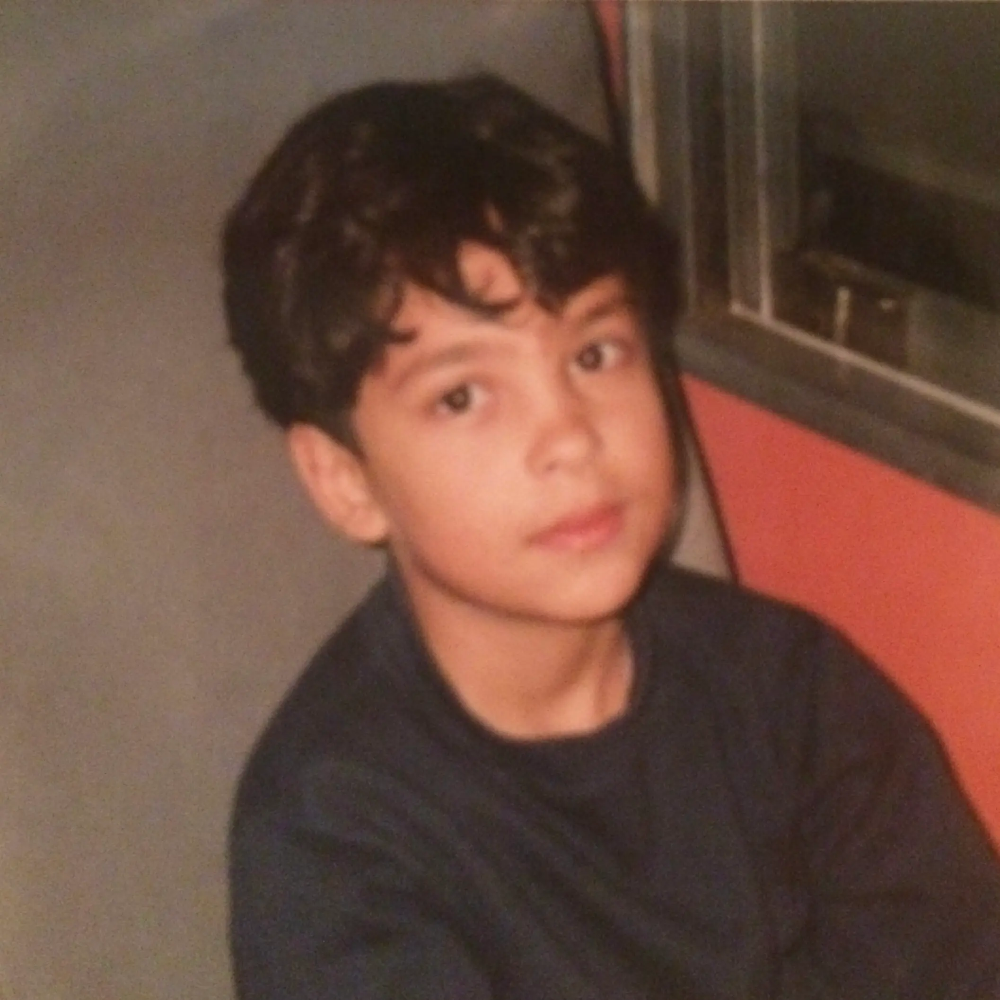
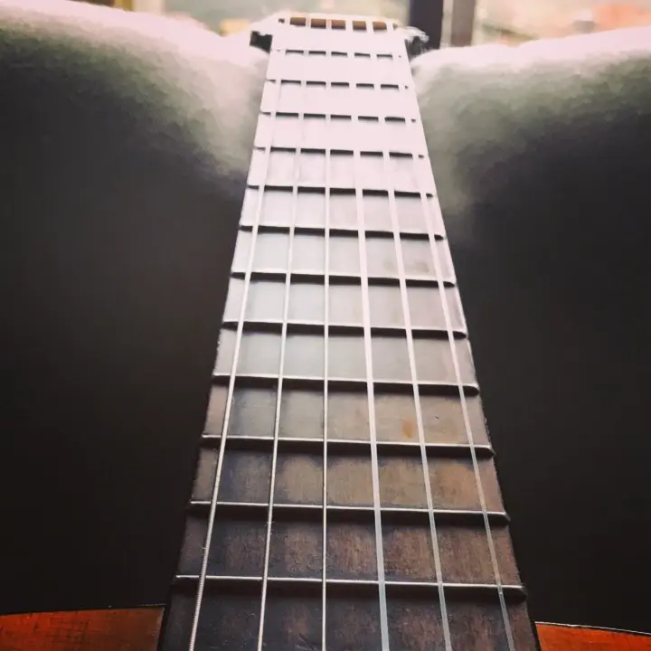
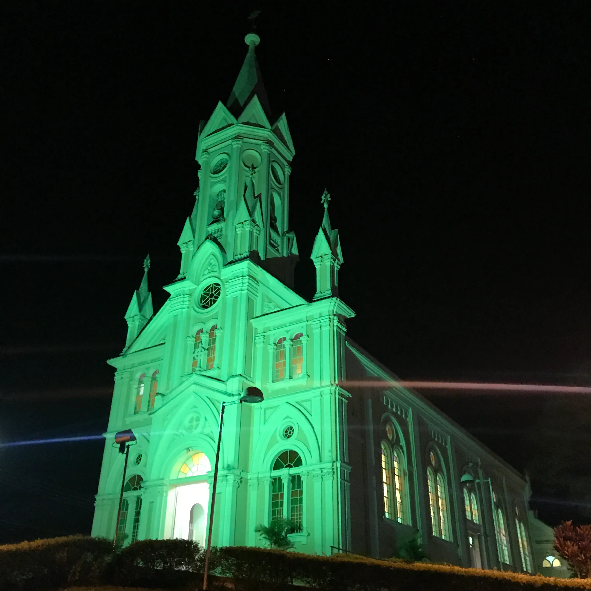
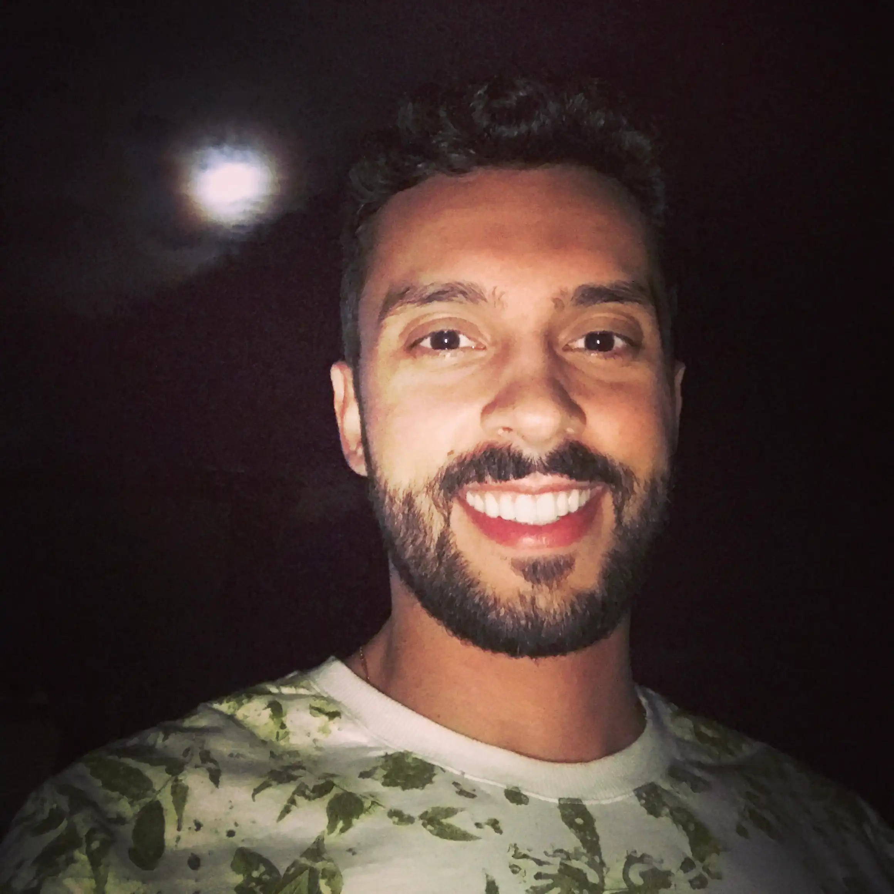
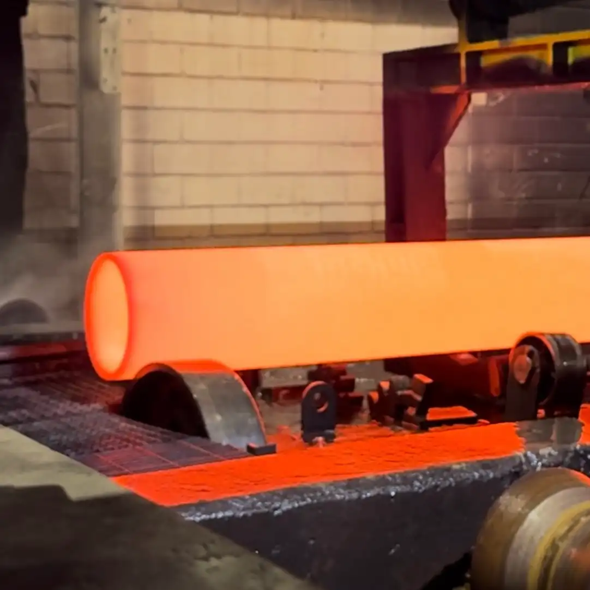
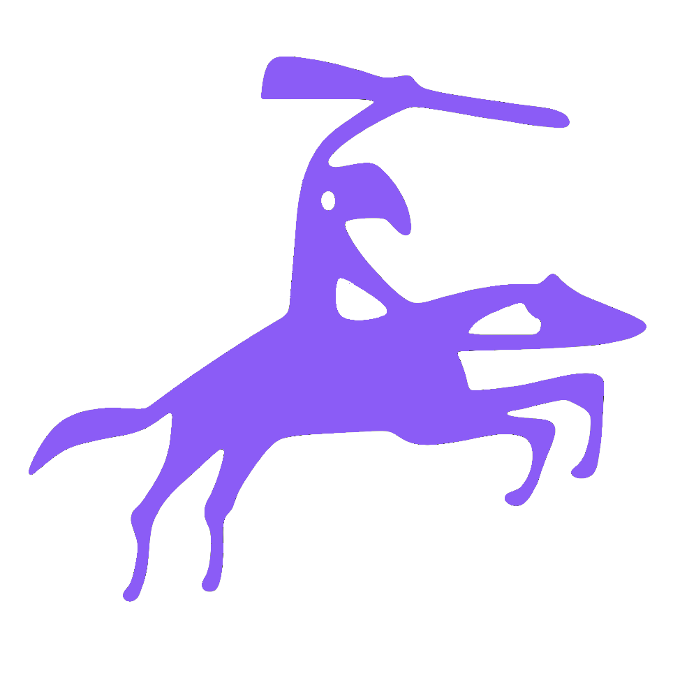
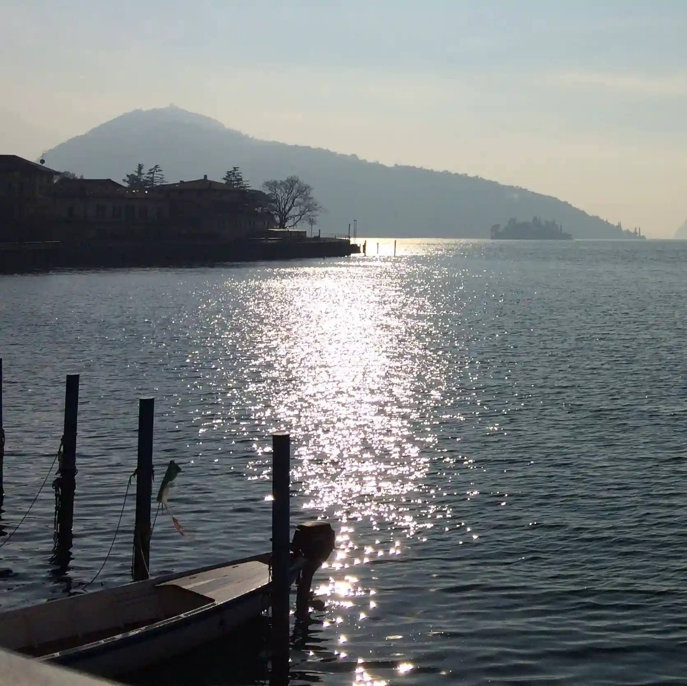
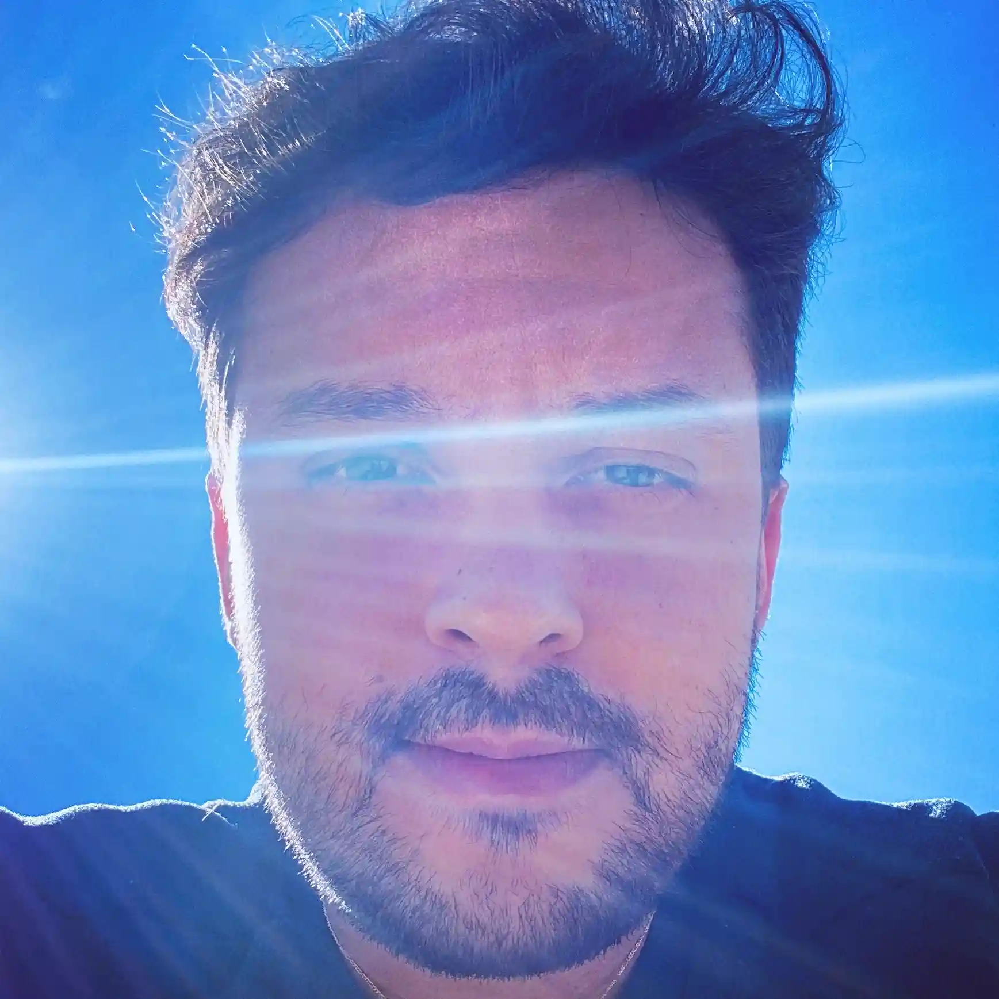
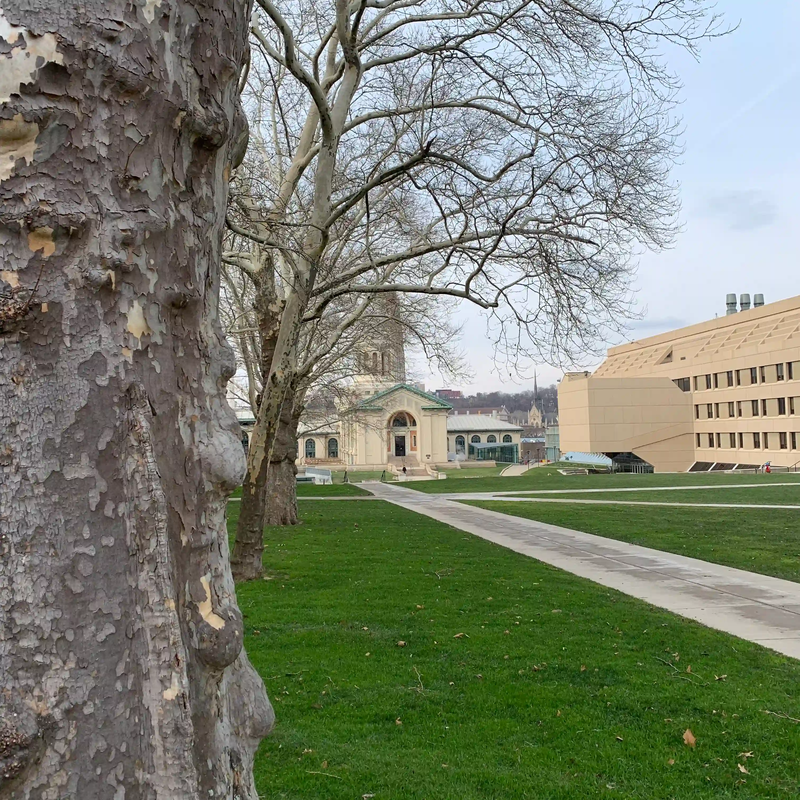
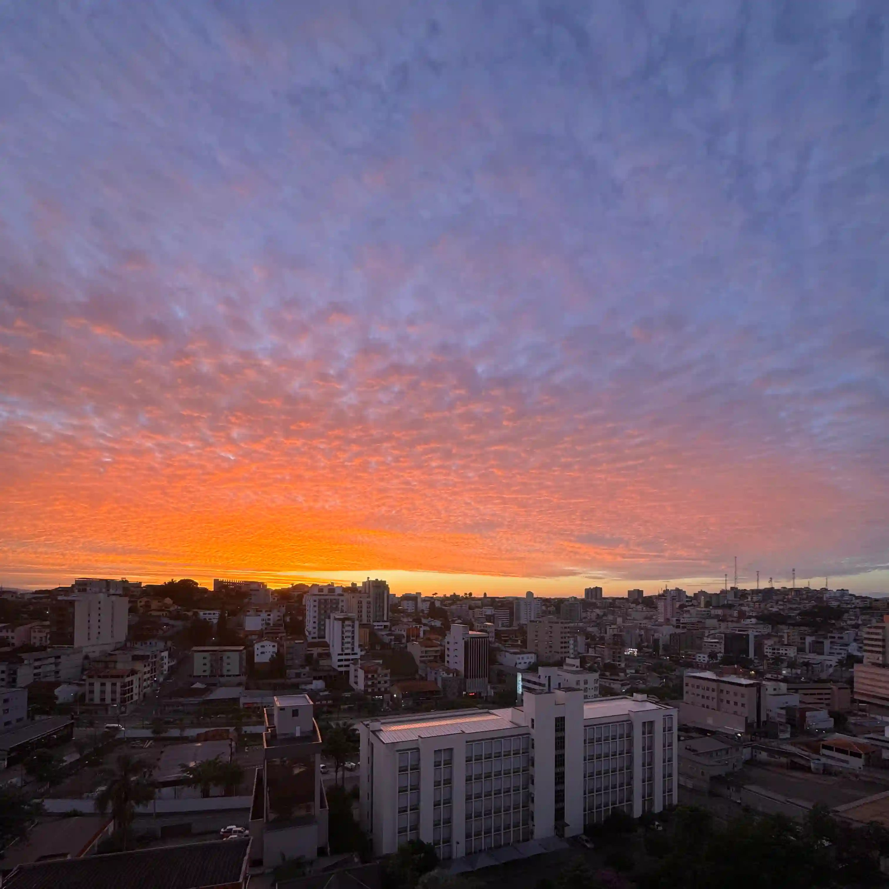
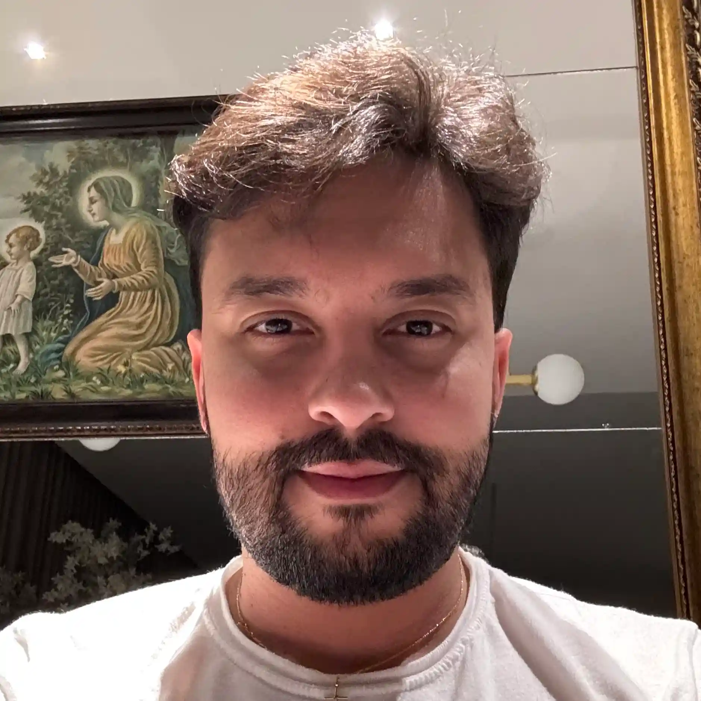
Projeto Pessoal
Riobaldo nasce como espaço de reflexão e escrita lenta, onde o pensamento pode seguir seu próprio ritmo, longe da urgência das redes e mais perto daquilo que importa: a tentativa sempre renovada de compreender.
Trajetória Profissional
O correr da vida embrulha tudo, a vida é assim: esquenta e esfria, aperta e daí afrouxa, sossega e depois desinquieta. O que ela quer da gente é coragem. O que Deus quer é ver a gente aprendendo a ser capaz de ficar alegre a mais, no meio da alegria, e inda mais alegre ainda no meio da tristeza! Só assim de repente, na horinha em que se quer, de propósito — por coragem.
João Guimarães Rosa
Grande Sertão: Veredas
A sabedoria reside inteira numa certa proporção que somos capazes de encontrar entre aquilo que queremos e aquilo que nos acontece, sem que possamos dizer se é aquilo que nos acontece que assume a forma daquilo que queremos ou aquilo que queremos que assume a forma daquilo que nos acontece.
Louis Lavelle
O Erro de Narciso
Existe algo de lindo na ansiedade, de tal forma que devemos vivê-la, mas sem deixar que ela nos devore. Devemos viver a dúvida que nós mesmos nos colocamos hoje, com a paciência e confiança de que a resposta virá no momento em que seremos capazes de recebê-la e vivê-la.
Rainer Maria Rilke
Cartas a um Jovem Poeta